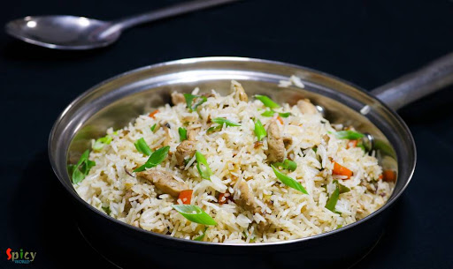

The recipe of Chicken Fried Rice

WHAT IS Chicken Fried Rice, AND WHY DO I LOVE IT SO MUCH?
Chicken fried rice is a classic Asian-inspired dish made with cooked rice, stir-fried vegetables, eggs, and diced chicken. It's a quick and easy
meal that's
perfect for using up leftover rice. The key to good chicken fried rice is using cold, cooked rice to prevent mushiness and cooking
everything over high heat
for a slightly charred flavor.
Ingredients Required
- Cooked, cold rice (2 cups) - Preferably day-old, not freshly cooked
- Chicken ( boneless, skinless breasts or thighs - 1/2 lb)
- Eggs (2 large)
- Chopped onion
- Diced carrots
- Soy sauce (2 tablespoons)
- Sesame oil (1 teaspoon)
- Vegetable oil (1 tablespoon)
- Salt and pepper to taste
- Chopped scallions (for garnish)
- Oyster sauce (1 tablespoon, optional) - adds umami depth
- Light soy sauce (1 tablespoon, optional) - for a richer flavor
Instructions
- Prep the ingredients: Cook your rice according to package instructions and let it cool completely in the refrigerator for at least a few
hours, or overnight (preferably). This prevents mushy rice.
- Cook the chicken: Dice or shred the chicken into bite-sized pieces. Heat a wok or large skillet over medium heat with 1 tablespoon
vegetable oil. Add the chicken and cook, stirring occasionally, until golden brown and cooked through, about 5-7 minutes. Remove the chicken from the
pan and set aside on a plate.
- Scramble the eggs: Whisk the eggs in a small bowl. Add a teaspoon of oil to the wok (or pan) used to cook the chicken. Increase the
heat to medium-high. Pour in the whisked eggs and scramble them until cooked through but still slightly soft, about 1 minute. Push the cooked eggs to
the side of the pan.
- Stir-fry the vegetables: Add another teaspoon of oil to the pan. Add the chopped onion and diced carrots and stir-fry for 2-3 minutes,
or until the onions are softened. If using frozen peas, add them at this point and cook for another minute.
- Combine and season:Push the vegetables to one side of the pan. Add the cooked rice to the empty side of the pan and break it up with a
spatula. Once hot, pour in the soy sauce, light soy sauce (if using), and oyster sauce (if using). Stir-fry for a minute to combine everything.
- Incorporate the protein and final touches: Add the cooked chicken and scrambled eggs back to the pan and toss everything together to
combine evenly. Drizzle with sesame oil and season with salt and pepper to taste.
- Serve:Garnish with chopped scallions and serve immediately. Enjoy your homemade chicken fried rice!